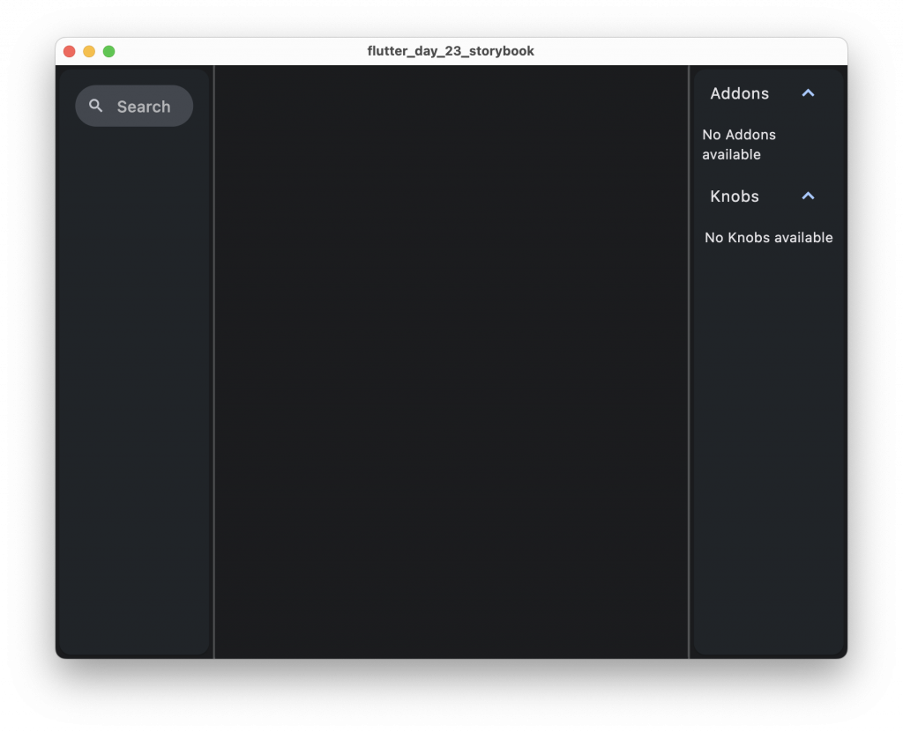
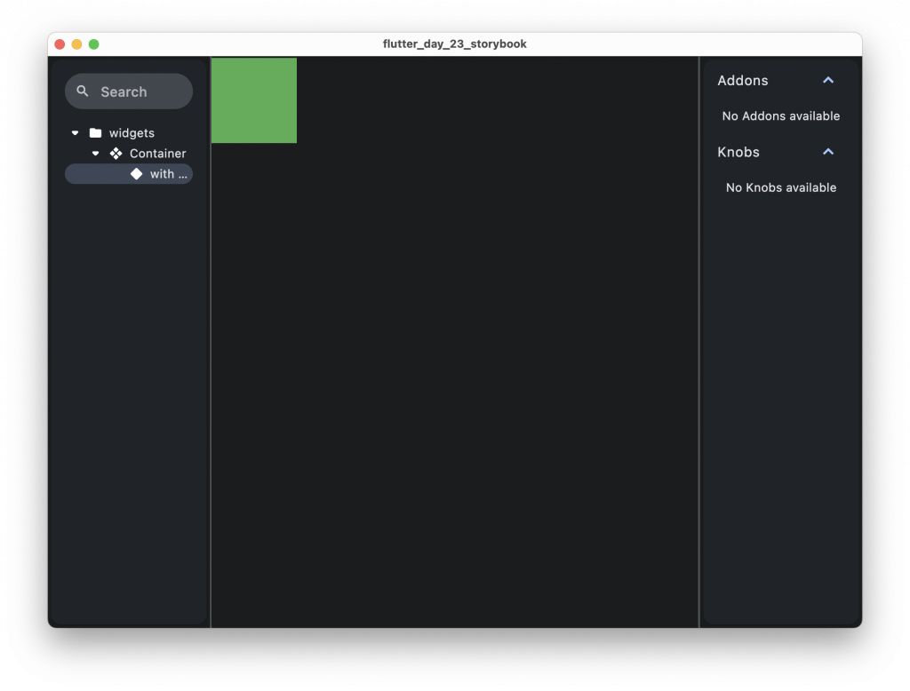

Day 54：原來還能這樣用 ！｜StoryBook 加速創作的方法
今天一起來看看 UI 開發工具的好幫手 StoryBook 在深入探索Flutter Storybook的用法之前，首先讓我們了解其背後的起源和概念。
Storybook 起初是為React社區設計的開放原始碼工具，用於開發UI元件於隔離的環境中。隨著時間的推移，它已經擴展到支援許多其他的前端框架，如 Vue、Angular、Svelte 以及當然還有 Flutter。這個工具的主要目標是使開發人員能夠單獨開發和測試UI元件，而不必擔心整個應用程式的上下文或狀態。
Storybook的主要優勢：
-
隔離開發：您可以單獨製作和優化UI元件，無需擔心其他應用程式邏輯或數據。
-
可視化檢查：提供了一個界面，可以在各種不同的狀態和輸入下檢視和互動您的元件。
-
可重用性：由於元件是在隔離的環境中開發的，因此它們往往更加模塊化和可重用。
-
協作：設計師和開發人員可以密切合作，以確保元件的視覺效果和功能都達到期望的效果。
Flutter StoryBook
Flutter 相關的 StoryBook Package 也不少，目前社群比較多人用的應該是：
widgetbook 和 storybook_flutter 這兩個 Package：
目前我們採用的是 widgetbook ，因為他的 usecase 更方便也有提供 Annotation 做自動化可以省下很多功夫，文件跟社群也比較活躍。所以我們接下來會以 widgetbook 做下面的相關介紹。
Setup
安裝可以直接參考官網這裡就快速帶過。
安裝依賴
flutter pub add widgetbook_annotation widgetbook
flutter pub add widgetbook_generator build_runner --dev
建立一個 widgetbook.dart 的檔案
// widgetbook.dart
import 'package:flutter/material.dart';
import 'package:widgetbook/widgetbook.dart';
import 'package:widgetbook_annotation/widgetbook_annotation.dart' as widgetbook;
// Import the generated directories variable
import 'widgetbook.directories.g.dart';
void main() {
runApp(const WidgetbookApp());
}
@widgetbook.App()
class WidgetbookApp extends StatelessWidget {
const WidgetbookApp({Key? key}) : super(key: key);
@override
Widget build(BuildContext context) {
return Widgetbook.material(
// Use the generated directories variable
directories: directories,
addons: [],
);
}
}
跑 build_runner
flutter pub run build_runner build
開始運行 widgetbook
flutter run -t lib/widgetbook.dart -d macos
到這裡我們就可以看到成功運行的畫面摟，目前支援 macos, windows linux web 版本，選擇適合你的方式即可。成功的畫面就像下面這樣：

Component
在完成基本的框架後，接下來就是要把自己的 Widget 加入畫面中摟！我們要使用的叫做 @UseCase，他拿來定義我們每一個被加入的 Widget 有哪些使用範例。這裡我們寫一個綠色的正方體做示範：
這些 Widget Function 都必須給定一個 BuildContext 作為傳入的參數
import 'package:flutter/material.dart';
import 'package:widgetbook_annotation/widgetbook_annotation.dart' as widgetbook;
@widgetbook.UseCase(
name: 'with green color',
type: Container,
)
Widget greenContainerUseCase(BuildContext context) {
return Column(
children: [
Container(
color: Colors.green,
child: const SizedBox.square(
dimension: 100,
),
),
],
);
}
完成後要再跑 build_runner 就會替我們生成 usecase 到 widgetbook 中摟
flutter pub run build_runner build
結果：

Knobs
knobs 代表的是我們可以調整的參數，讓我們可以帶入任意的參數作為使用，可以快速看到不同參數底下 Widget 的結果。
目前 widgetbook 支援這些 Knobs，透過這些參數我們就能做出許多調整了
Name Type
boolean bool
booleanOrNull bool?
string String
stringOrNull String?
double.slider double
doubleOrNull.slider double?
double.input num
doubleOrNull.input num?
list T
listOrNull T?
duration Duration
durationOrNull Duration?
Knobs 也支援自訂義可以參考官網文件
嘗試做一個可以自行控制 title 的 widget
// title_widget.dart
import 'package:flutter/material.dart';
import 'package:widgetbook/widgetbook.dart';
import 'package:widgetbook_annotation/widgetbook_annotation.dart' as widgetbook;
@widgetbook.UseCase(name: 'with different title', type: Container)
Widget myWidget(BuildContext context) {
return Text(
context.knobs.string(
label: 'Title Label',
initialValue: 'HomePage',
),
);
}
或是一個點點產生器
import 'package:flutter/material.dart';
import 'package:widgetbook/widgetbook.dart';
import 'package:widgetbook_annotation/widgetbook_annotation.dart' as widgetbook;
@widgetbook.UseCase(name: 'with different title', type: Container)
Widget myWidget(BuildContext context) {
return Wrap(
crossAxisAlignment: WrapCrossAlignment.center,
children: [
...(List.generate(
context.knobs.double
.slider(
label: "Dots",
initialValue: 1,
min: 1,
max: 30,
divisions: 29,
)
.toInt(),
(index) => Container(
margin: const EdgeInsets.all(2),
decoration: const BoxDecoration(
shape: BoxShape.circle,
color: Colors.white,
),
width: 20,
height: 20,
),
))
],
);
}
記得完成以後要再跑一次 build runner 就可以摟

Addon
WidgetBook 也提供 Addon 可以來補足他不足的地方，這裡我們拿 Device Frame Addon 來簡單做一個示範：
Device Frame Addon
在做 Widget book 時，為了讓畫面更逼真或是更貼近現實，希望可以看到 Widget 在手機上的模擬畫面，這時候就可以靠他幫忙實現。只要在 addons 裡面加上 DeviceFrameAddon 再 hotreload 一下就可以摟！
@widgetbook.App()
class WidgetbookApp extends StatelessWidget {
const WidgetbookApp({Key? key}) : super(key: key);
@override
Widget build(BuildContext context) {
return Widgetbook.material(
directories: directories,
addons: [
DeviceFrameAddon(
devices: [Devices.ios.iPhone13],
initialDevice: Devices.ios.iPhone13,
)
],
);
}
}
如果想要隱藏也可以側邊欄的 Addon 去做調整

其他案例：數位藝術創作
在看完這些功能以後，除了一般 UI 的直觀操作，widgetbook 的 Knobs 和 addon 其實也提供給數位藝術創作很好的發揮舞台。通常我們在做藝術創作時，調整參數其實花費很大的時間，因為要不停改各個參數之間的互動，以達到最好的藝術效果。在 JS 我們通常會用 dat.gui 這個 pakcage ，但是 Flutter 目前並沒有一個好用的 package 來做這件事，Knobs 其實就可以拿來替代這個功能。那我們就來寫一個簡單的範例吧：
這個範例需要用到一個 package，可以幫我們拿到時間變數，熱騰騰昨天才寫好的：
digital_art_toolkit: ^0.0.1
接下來開始我們的創作，這裡主要是畫無數的正方形框框，然後讓他依照時間做出抖動的效果
import 'dart:math';
import 'package:flutter/material.dart';
class AnimatedSkewBox extends StatefulWidget {
final double time;
final int amount;
const AnimatedSkewBox({super.key, required this.time, required this.amount});
@override
State createState() => _AnimatedSkewBoxState();
}
class _AnimatedSkewBoxState extends State {
late double lastTime;
@override
void initState() {
lastTime = widget.time;
super.initState();
}
@override
void didUpdateWidget(covariant AnimatedSkewBox oldWidget) {
if (widget.time - lastTime > 0.06) {
lastTime = widget.time;
}
super.didUpdateWidget(oldWidget);
}
@override
Widget build(BuildContext context) {
return CustomPaint(
painter: SkewPainter(
time: widget.time,
amount: widget.amount,
shouldRepaintWidget: widget.time == lastTime,
),
size: const Size(200, 200),
);
}
}
class SkewPainter extends CustomPainter {
final double time;
final int amount;
final bool shouldRepaintWidget;
SkewPainter(
{required this.time,
required this.amount,
required this.shouldRepaintWidget});
double getRandomSkewValue() {
Random random = Random();
double skewValue = random.nextDouble() * 3 +
7; // This will generate a random value between 5 and 10
return random.nextBool()
? skewValue
: -skewValue; // Randomly make it negative
}
@override
void paint(Canvas canvas, Size size) {
var paint = Paint()
..color = Colors.white
..strokeWidth = 0.1
..style = PaintingStyle.stroke;
for (var i = 0; i < amount; i++) {
double squareSize = 10;
final randomSkewX = getRandomSkewValue();
final randomSkewY = getRandomSkewValue();
// Calculate the center of the square
double centerX = squareSize / 2;
double centerY = squareSize / 2;
canvas.save();
// Translate to the center of the square
canvas.translate(centerX, centerY);
// Apply the skew
canvas.skew(randomSkewX, randomSkewY);
// Translate back from the center
canvas.translate(-centerX, -centerY);
// Draw the square
canvas.drawRect(Rect.fromLTWH(0, 0, squareSize, squareSize), paint);
canvas.restore();
}
}
@override
bool shouldRepaint(CustomPainter oldDelegate) {
return shouldRepaintWidget;
}
}
然後搭配上 knobs 操作台：
import 'package:digital_art_toolkit/dat_builder.dart';
import 'package:flutter/material.dart';
import 'package:flutter_day_23_storybook/widgets/digital_art.dart';
import 'package:widgetbook/widgetbook.dart';
import 'package:widgetbook_annotation/widgetbook_annotation.dart' as widgetbook;
@widgetbook.UseCase(
name: 'with box amount',
type: Container,
)
Widget squareBox(BuildContext context) {
return Center(
child: DatBuilder(builder: (context, time, mouseOffset) {
return AnimatedSkewBox(
time: time,
amount: context.knobs.double
.slider(
label: "Square amount",
initialValue: 8,
min: 1,
max: 20,
divisions: 20,
)
.toInt(),
);
}),
);
}
接下來就可以看到成果摟：
有了 Storybook 的幫忙，我可以更專心在創作上面。
總結
透過這篇文章，我們深入地探索了 StoryBook 這項強大的 UI 開發工具，尤其是在 Flutter 領域中的應用。從 StoryBook 的起源和概念，到具體的設置步驟、元件、Knobs 和 Addon，都進行了詳盡的介紹。可以看到，StoryBook 不僅能夠幫助開發者更方便地製作和優化 UI 元件，也提供了高度的可視化功能，使得協作、測試和創作都變得更加簡單。
特別值得一提的是，通過 StoryBook 的 Knobs 和 addon，我們還能夠擴展其應用，例如數位藝術創作，快速調整參數和視覺效果，極大地提高了創作效率。總的來說，無論是日常的 UI 開發，還是特定的藝術創作，StoryBook 都提供了強大的支援，是每位開發者的必備工具。
最後，希望這篇文章能夠幫助到想要更深入了解 StoryBook 的讀者，也期待看到更多精彩的應用和創作！